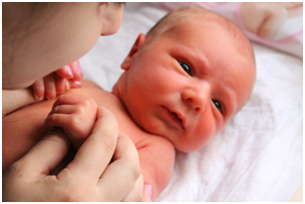

Особенности новорожденного и его развитие
Условно считают, что период новорожденности продолжается первые 4 недели. Родившемуся ребенку надо дышать, питаться, поддерживать постоянную температуру тела, наладить биологическую защиту, чередование сна и бодрствования и т.д. Как же природа подготовила его к переходу в новые условия жизни?
Сразу после рождения у ребенка происходит значительная перестройка всего организма. В работу включается множество различных систем, органов, приспособительных и защитных механизмов, регуляторов и рефлексов. Устанавливаются лёгочное дыхание, внеутробное кровообращение, начинает функционировать желудочно-кишечный тракт, изменяется клеточный состав крови с заменой плодового (фетального) гемоглобина эритроцитов на более зрелый и лучше обеспечивающий возросшие потребности организма ребёнка в кислороде, выведении углекислоты и доставке к органам и тканям различных питательных веществ. Включается собственная терморегуляция, приспособительные возможности которой очень велики. Если, например, ребёнок при рождении попадает в жару, включаются терморегуляторы, спасающие организм от перегревания, а если в холод, то – от переохлаждения; в случае необходимости включается система иммунитета. В первые недели жизни наибольшую значимость приобретает правильная организация режима сна и бодрствования, гигиенического ухода и вскармливания малыша. Чтобы создать наилучшие условия для его роста и развития, родителям необходимо знать особенности организма новорождённого.
Масса тела доношенных новорождённых колеблется от 2500 до 4000 г, составляя в среднем 3300-3700 г. У девочек она при рождении на 200-300 г меньше, чем у мальчиков. Новорождённые с массой тела 4000 г и более считаются крупновесными и относятся к группе риска в связи с возможностью развития у них осложнений при родах и в послеродовом периоде. Все новорождённые в первые дни жизни теряют в среднем 200-300 г своей массы тела. Это так называемая физиологическая убыль массы, связанная с потерей жидкости и части энергетических запасов (в частности, глюкозы), к быстрому восстановлению которых ребёнок ещё не готов. К 7-10-му дню жизни эта потеря компенсируется. На первом месяце жизни прибавка массы тела ребёнка составляет до 600 г и более. По данным некоторых учёных, кормление детей сразу после родов способно предотвратить потерю веса в первые дни жизни.
Длина тела при рождении колеблется в пределах 48-58 см, составляя в среднем 52-53 см (у девочек обычно на 1-2 см меньше, чем у мальчиков).
Окружность головы и груди составляет в среднем 34-35 см (у девочек на 0,5-0,7 см меньше).
Здоровый доношенный новорождённый имеет гладкую, эластичную кожу розового цвета, покрытую во многих местах творожистой, так называемой, родовой смазкой. Потовые железы кожи, ещё слабо развитые при рождении, в дальнейшем предохраняют ребёнка от перегревания, сальные железы благодаря своему секрету делают кожу эластичной, мягкой, бархатистой, предохраняя её от высыхания и образования трещин.
Крик доношенного новорождённого громкий, мышечный тонус хороший, движения активные. У него достаточно хорошо выражены основные физиологические рефлексы. Сразу после рождения ребёнок может не только сосать (сосательный рефлекс) и глотать (глотательный рефлекс), но и обладает целым комплексом врождённых двигательных рефлексов (хватательный, опорный, шаговый, плавательный, рефлекс ползания и др.).
Температура тела у различных детей устанавливается в диапазоне от 35° с десятыми до почти 37°, чаще всего в пределах 36°. В течение суток она может несколько колебаться, что соответствует биоритмам жизнедеятельности различных органов и систем организма. Так, утром температура тела несколько ниже, чем к вечеру. Однако у одного и того же ребёнка в течение суток она не должна, как правило, отклоняться более, чем на 0,5-0,7 градуса.
У новорожденного ребёнка на голове имеются большой и малый роднички – участки неплотного соединения костей черепа, которые по мере роста ребёнка постепенно закрываются костной тканью.
В период новорождённости чётко прослеживается становление и совершенствование органов чувств ребёнка, некоторые из них в это время развиты уже вполне удовлетворительно. Так, у доношенного ребёнка уже на первой неделе жизни обнаруживается выраженная функция вкусового аппарата. Он по-разному реагирует на вкусовые ощущения. Более сладкая пища, как правило, вызывает положительные эмоции: ребёнок успокаивается, облизывает губы, легче глотает и даже обнаруживает привыкание к сладкому. В то же время горькое, кислое или солёное (даваемое, например, в виде лекарств) вызывает беспокойство, крик, протест в виде отказа от сосания и глотания.
Обоняние у новорождённого также развито в определённой мере с первых дней жизни. При воздействии на его слизистые оболочки верхних дыхательных путей раздражающих газообразных веществ ребёнок становится беспокойным. Он может отказываться от груди, если она обработана каким-либо ароматическим лекарственным препаратом (например, в случае трещин сосков и т. д.). Относительно хорошо развито чувство осязания. Новорождённый живо реагирует на прикосновения к его коже и слизистым оболочкам, хорошо ощущает грудь матери и. будучи голодным, при малейшем прикосновении губами к ней имитирует сосательные движения.
3рение у ребёнка к моменту рождения ограничено восприятием сравнительно яркого света, пространственного восприятия предметов у него ещё нет, а движения глазных яблок, как правило, не координированы, что может обусловливать даже некоторое временное физиологическое «косоглазие». Мигательный рефлекс на приближение предмета к глазу не выражен. Интенсивное развитие зрения происходит на 2-м и последующих месяцах жизни ребёнка. Слух у новорождённого снижен, но на сильные звуковые раздражители он реагирует с первых дней жизни. Это прослеживается по его поведенческим реакциям (вздрагивание, сокращение мимической мускулатуры, изменение частоты и глубины дыхательных движений).
С рождением ребёнка начинается самостоятельная функция его органов выделения. В первые дни жизни ребёнок мочится 5-6 раз в сутки, к концу 1-й недели – значительно чаще и больше по объёму (на 8-й день жизни до 200 мг. и более в сутки). В первые 2-3 дня жизни ребёнка из его кишечника выделяется первородный кал, или меконий, – густая однородная масса тёмно-зелёного цвета, состоящая из секрета пищеварительного тракта, слущенного эпителия кишечника и заглоченных околоплодных вод. Затем по мере заселения кишечника бактериальной флорой, способствующей ферментативному перевариванию пищи, синтезу витаминов и других биологически активных веществ, меконий заменяется коричневыми, зеленовато-жёлтыми, а позднее золотисто-жёлтыми испражнениями кашицеобразной консистенции со слабокислым запахом. Частота стула новорождённого ребёнка – 4-5 раз в сутки.
Нормальное развитие функции почек и кишечника – важное условие правильного формирования жизнедеятельности многих органов и систем, поддержания необходимого постоянства внутренней среды организма, быстрой адаптации ребёнка к условиям внеутробной жизни.
Из стерильных условий материнского тела новорождённый попадает в мир, наполненный микроорганизмами. Одни из них, подобно ацидофильной палочке, которая обеспечивает нормальное пищеварение, полезны и нужны ребёнку, другие нейтральны, а третьи вредны. Но здоровый новорождённый младенец вовсе не беззащитен, как считали ранее. В его организме уже имеется большинство факторов иммунобиологической защиты, хотя они ещё легко ранимы и могут повреждаться и угнетаться при различных осложнениях течения беременности и родов и при возникновении заболеваний в послеродовом периоде. Иммунитет ребёнка тесно связан с наследственностью, с выраженностью его у родителей, в первую очередь – у матери. Вот почему нужна постоянная забота о здоровье будущей матери, бережном его сохранении и повседневном укреплении.